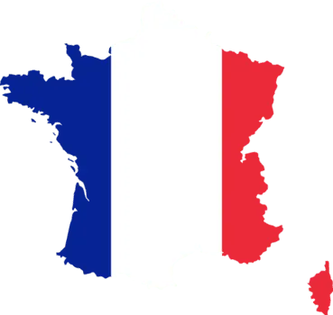

Bem-vindo ao Descubra a França
Descubra a França é um site que apresenta os costumes, a cultura e a história da França, permitindo que pessoas conheçam melhor as tradições, curiosidades e a identidade do país.

1º ano B - GinWorld
Descubra a França é um site que apresenta os costumes, a cultura e a história da França, permitindo que pessoas conheçam melhor as tradições, curiosidades e a identidade do país.
